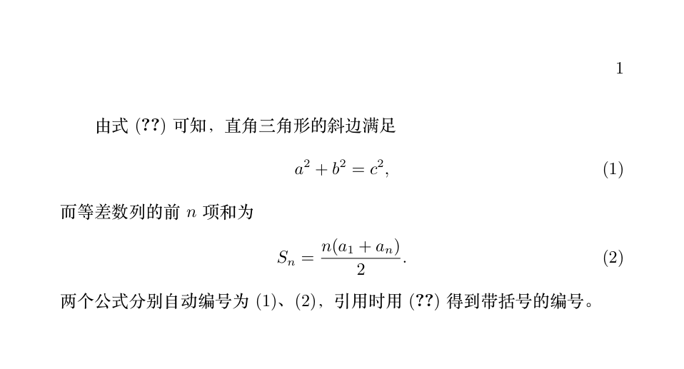

LaTeX 数式上級
前の記事では単行の数式を扱いましたが、今回は「大型」のもの、つまり行列・連立方程式・複数行の導出・式番号を扱います。
これらはすべて amsmath マクロパッケージに由来します。だからこそ、すべての数学ドキュメントのプリアンブルには \usepackage{amsmath} の1行を入れるべきなのです。
行列：matrix ファミリー
行列は環境で表します：& で列を区切り、\\ で改行し、環境名が外側の括弧のスタイルを決めます。
| 環境 | 外側のスタイル | 代表的な用途 |
|---|---|---|
| matrix | 括弧なし | データブロックの結合 |
| pmatrix | 丸括弧 ( ) | 通常の行列 |
| bmatrix | 角括弧 [ ] | 係数行列、線形代数 |
| Bmatrix | 波括弧 { } | 集合の表現 |
| vmatrix | 縦線1本 | | | 行列式 |
| Vmatrix | 縦線2本 ‖ ‖ | ノルム |
pmatrix（丸括弧の行列）
bmatrix（角括弧の行列）
vmatrix（行列式）
例：省略記号付きの n 次行列
\begin{pmatrix}
a_{11} & \cdots & a_{1n} \\
\vdots & \ddots & \vdots \\
a_{n1} & \cdots & a_{nn}
\end{pmatrix}
\]
3種類の省略記号にはそれぞれ役割があります：\cdots は横向き、\vdots は縦向き、\ddots は斜め向きです。行列の要素が多いときは、数十個の要素をすべて打ち込まず、必ず省略記号を使いましょう。
インライン数式に大きな行列が収まらない場合は、smallmatrix 環境を使えます。行間と文字サイズを圧縮してくれます。
複数行の導出：align 環境
align は数式の導出で主力となる環境です：複数行の数式を & でマークした位置で揃え、各行に自動で番号が付きます。
例：2行の導出
(a+b)^2 &= a^2 + 2ab + b^2 \\
&= a^2 + b^2 + 2ab
\end{align}
ルールは2つだけです：& を「整列アンカー」の位置（通常は等号の前）に置くと、前後を2つの列に分けます；\\ で改行します。各行に自動で番号が付きます。
例：定積分の計算
\int_0^1 x^2 \,\mathrm{d}x
&= \left[ \frac{x^3}{3} \right]_0^1 \notag \\[2pt]
&= \frac{1}{3}
\end{align}
ここでは2つの新しい書き方が出てきます：\notag は特定の行に番号を付けません（導出の中間行に番号が不要なときに使います）；\\ の後の [2pt] は行間を微調整するもので、省略可能です。
番号が一切不要な場合は、星印付きの align* 環境を使います。これは章コマンドの \section* と同じ論理です：星印は「番号を付けず、目次にも載せない」ことを意味します。
連立方程式と区分関数：cases 環境
cases 環境は、左側に1つの波括弧を持つグループ構造を生成するためのもので、連立方程式と区分関数の標準的な書き方です。
例：二元一次連立方程式
\begin{cases}
x + y = 5 \\
2x - y = 1
\end{cases}
\]
例：区分関数
f(x) =
\begin{cases}
-x, & x < 0 \\
x, & x \geq 0
\end{cases}
\]
区分関数では & の役割が変わります：「関数値」と「成立条件」を2つの列に分け、2列目の条件は自動的に右側に揃います。
式番号と参照
ディスプレイ数式 \[...\] には番号が付きません；参照したい式には equation 環境を使います。自動で番号が付きます。
例：番号付けと参照
\usepackage{amsmath} % align、equation、cases はすべてこれが必要
\begin{document}
式\eqref{eq:pyth}より、直角三角形の斜辺は次を満たすことがわかる
\begin{equation} \label{eq:pyth} % \label でラベルを付け、\eqref で参照する
a^2 + b^2 = c^2,
\end{equation}
また、等差数列の初項から第$n$項までの和は
\begin{equation}
S_n = \frac{n(a_1 + a_n)}{2}.
\end{equation}
\end{document}

3ステップで覚えましょう：equation が番号を付け、\label{key} でラベルを付け、\eqref{key} で参照します（自動で括弧が付きます）。
ラベルの名前は「種類:内容」を推奨します。例：eq:pyth、eq:sum——式が増えてくると、eq:3 のような名前では自分でも判別できなくなります。
参照が (??) と表示される場合、.aux がまだ更新されていないことを意味します。もう一度コンパイルしましょう（おなじみの現象です）。
長すぎる式の折り返し：split 環境
1つの式が版面の幅を超えるほど長い場合、equation の中に入れて split で折り返します——全体で同じ1つの番号を保持します。
例：長い式の折り返し
\begin{split}
\sum_{i=1}^{n} (x_i - \bar{x})(y_i - \bar{y})
&= \sum_{i=1}^{n} x_i y_i - n\bar{x}\bar{y} \\
&= \frac{1}{n}\sum_{i=1}^{n} x_i y_i - \bar{x}\bar{y}
\end{split}
\end{equation}
split と align の違い：align は「複数の式」にそれぞれ番号を付けます；split は「1つの式」を複数行に折り返し、1つの番号を共有します。入れ子関係もそれを示しています——split は equation（または \[...\]）の中に置く必要があります。
よくある数式エラーのトラブルシューティング
数式モードに関するエラーは初心者のエラーの大半を占めます。頻出エラーは以下のとおりです。
| 誤った書き方 | 問題 | 正しい書き方 |
|---|---|---|
| テキスト中で直接 \alpha を使う | 数式コマンドは数式モードでのみ使える | $\alpha$ |
| $a_1 + b_$ | _ または ^ の後ろに内容がない | 補う：$a_1 + b_2$ |
| \[ x = \frac{1}{2} \] | amsmath を読み込んでいないのに \dfrac などを使う | プリアンブルに \usepackage{amsmath} |
| \[ a & b \\ c & d \] | 通常のディスプレイ数式で & を使う | & は matrix、align などの環境専用 |
| 数式の中に中国語の説明を混ぜる | フォントと改行がすべて乱れる | 説明文は $ の外に置くか、\text{中文} を使う |
| align で \\ を忘れる | 複数行が1行に詰め込まれる | 各行の末尾（最終行を除く）に \\ を付ける |
ちなみに \text{...}（amsmath が提供）についてもう少し説明します：たまに数式の中に短い文字列を埋め込む必要があります（例：「x > 0 のとき」という条件や単位）。\text で囲めば、立体のまま通常の間隔を保てます。
まとめ
| ニーズ | 環境 / コマンド |
|---|---|
| 行列 | pmatrix / bmatrix / vmatrix（& で列分割、\\ で改行） |
| 複数行の導出（各行に番号） | align、星印版は番号なし |
| 連立方程式 / 区分関数 | cases |
| 番号付きの単一の式 | equation + \label |
| 式番号の参照 | \eqref{key} |
| 長い式の折り返し | equation 内に split を入れ子 |